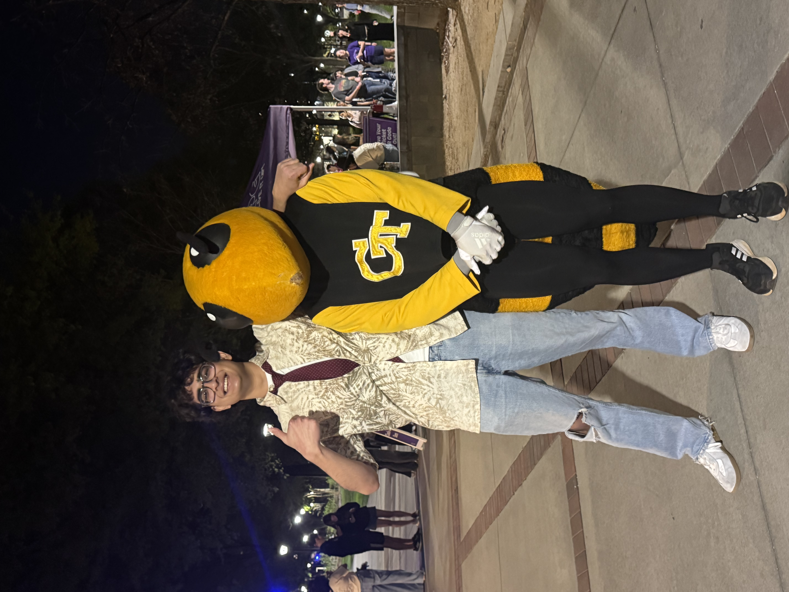

About Me
Hi! I'm Shyam Tridandapani. Ever since I was younmg, I experimented with creating and building, especially with technology. This early passion led me to computer engineering, where I can build to solve problems with a combination of software and hardware. Growing up in Atlanta provided me a unique lens, as I experienced diverse cultures firsthand and saw how computing innovations shape communities in real time.
I’m particularly drawn to computer networking and cloud computing, the often-overlooked backbone of our technological world. I feel strongest in designing reliable network systems and cloud architectures, skills that enable me to interface with and build on this so-called backbone.
Two projects define my hands-on experience: restoring my BMW 128i and building a cloud microservices chatroom. In the BMW project, I worked with outdated software requiring creative workarounds and faced minimal documentation, which sharpened my troubleshooting and out-of-the-box thinking skills. In my chatroom project, I coordinated asynchronous message queues and auto-scaling APIs to ensure fault tolerance and a seamless user experience.
When confronted by roadblocks, I push forward until I must pause and reevaluate my approach. I’m not afraid to ask questions or communicate openly; my teammates rely on my honesty and prompt updates to keep projects on track.
Outside of computer engineering, I do hands-on work with cars and artistic DIY projects. These experiences reinforce my resilience, commitment, and self-sufficiency, reminding me that I can accomplish what I set my mind to. I strive to be a dependable team player: approachable, communicative, and someone who helps hold the team together.